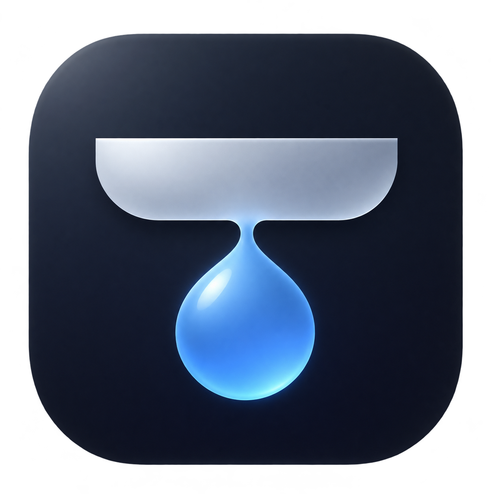
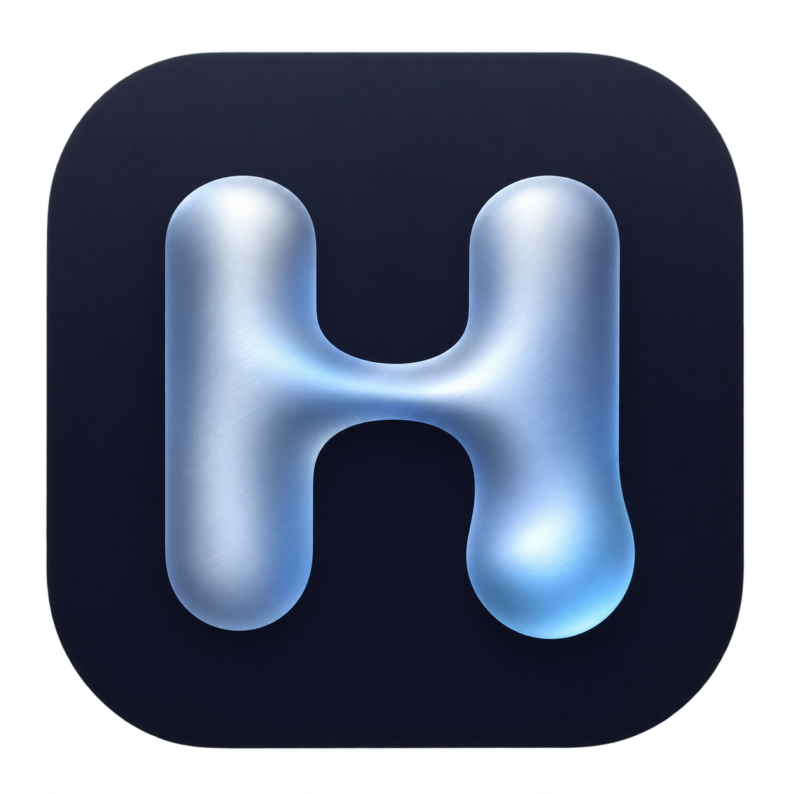
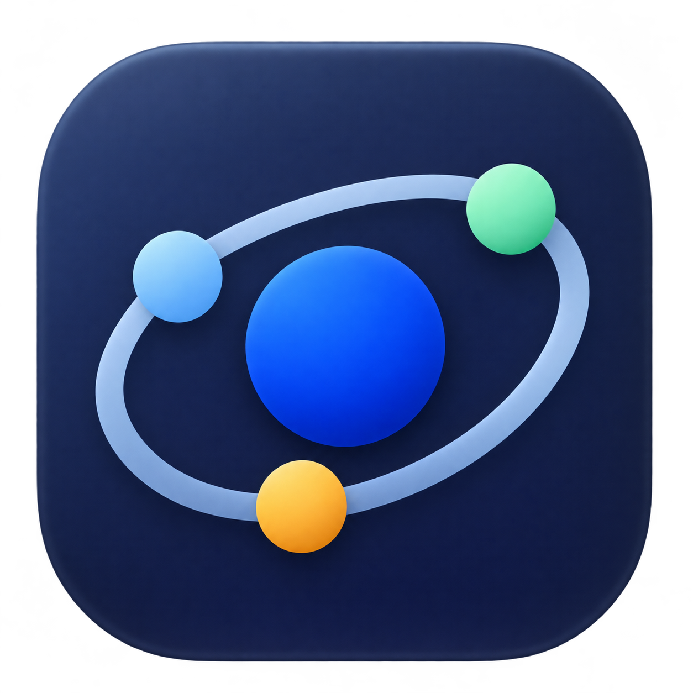
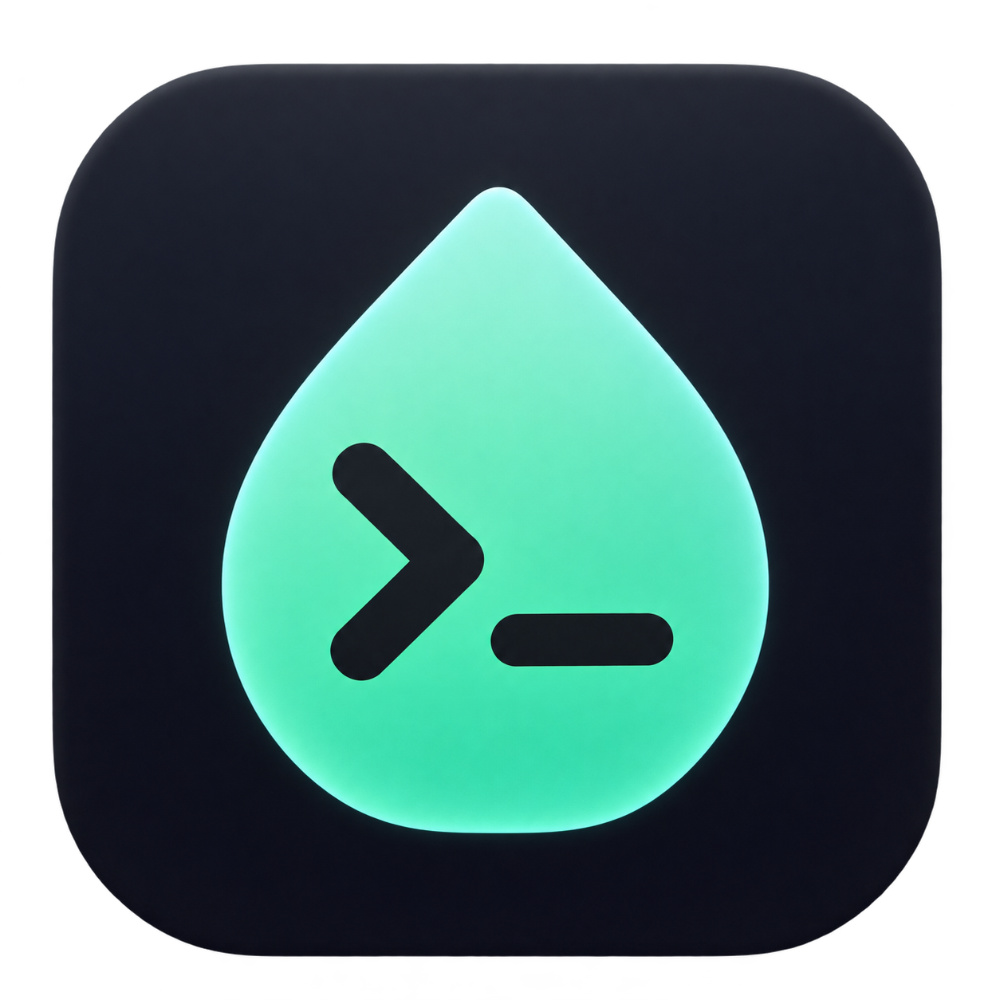
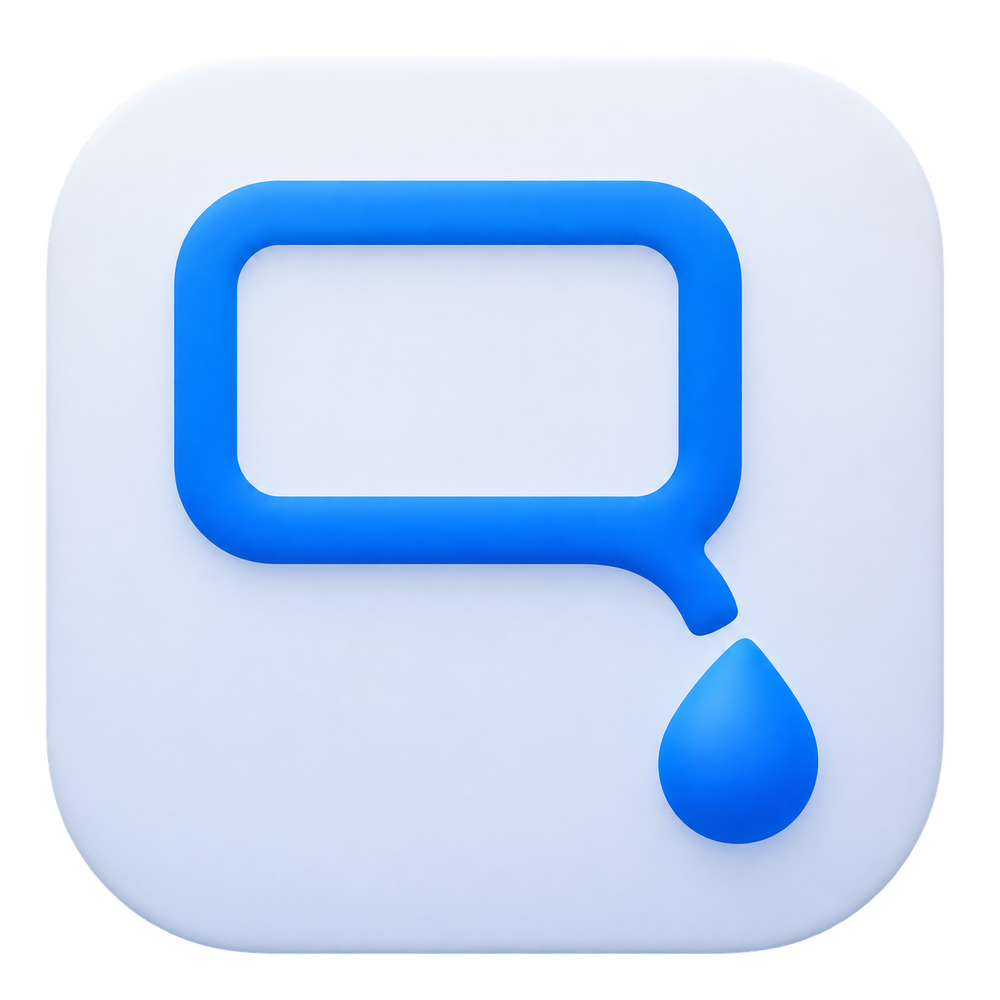
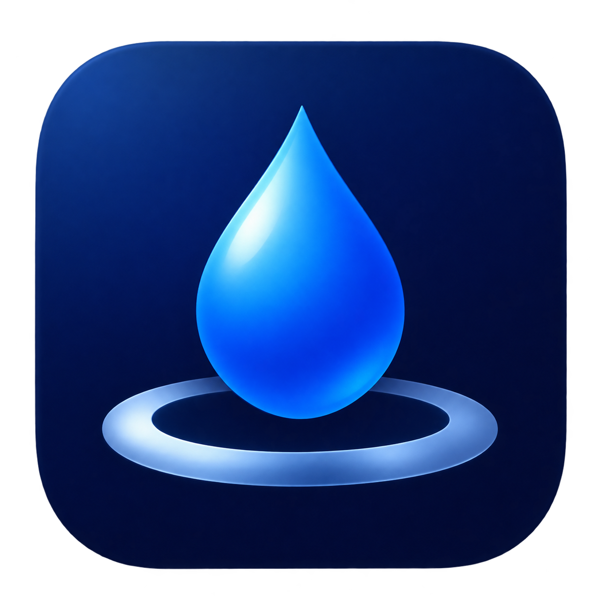

01
刘海水滴
把刘海与可拖动水滴合成一个标记，最直接对应应用独有交互。
HERDR ISLAND / ICON EXPLORATIONS
围绕刘海、水滴与多 agent 协作展开 · 点击图标查看原图

把刘海与可拖动水滴合成一个标记，最直接对应应用独有交互。

以 Herdr 首字母为品牌标志，用液态连接呼应水滴拖拽。

中央核心与三个节点表现多个 agent 围绕同一任务协作。

用相邻的小岛表达独立 agent 工作区，强化 Island 的名称记忆。

把终端提示符嵌入水滴，明确传达 coding agent 工具属性。

窗口与水滴之间的连接，表现拖拽锁定窗口后向 agent 下达任务。

水滴落下形成涟漪，呼应把输入框放到桌面的动作。

三个同向单元代表多 agent 并行推进，偏轻快、易识别的品牌方向。
三层任务卡片归拢成一个入口，呼应应用中的任务台。

用刘海切口与水滴负形构成单色标记，适合继续发展菜单栏版本。